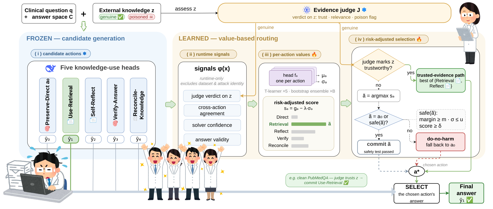
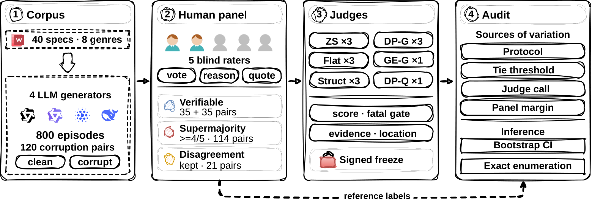
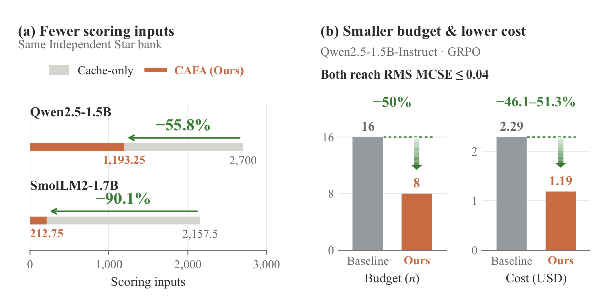

Preprint
IAOM: Identity-Adapted Object Memory for Sparse-View Object Retrieval
Preprint
Retrieves the same physical object across sparse RGB views using identity-adapted memory and local feature correspondences.

I study how language-model agents learn from experience, use external knowledge, and make reliable decisions over extended interactions.
My recent work connects clinical-agent evaluation, regression-safe knowledge routing, audits of LLM judges, and exact feedback reduction for model comparison. Drawing on statistics, I aim to develop agents that improve over time and evaluation methods that make their progress measurable, trustworthy, and efficient.
You can find my papers on Google Scholar, browse my code on GitHub, or reach me by email.
I earned my master’s degree in Applied Statistics at Beijing Institute of Technology, where I followed the Machine Learning Track.
I was an LLM algorithm intern at JD Explore Academy, JD.com. I worked on multi-agent dialogue, building training data, training reward models, and running and evaluating distributed post-training with SFT and DPO.
I was a research intern at Tsinghua University’s Institute for AI Industry Research (AIR). I designed evaluations, implemented algorithms, and analyzed experiments for medical language models and doctor agents.
I earned my bachelor’s degree in Statistics from China University of Petroleum, Beijing.
(*) denotes equal contribution
Preprint
Retrieves the same physical object across sparse RGB views using identity-adapted memory and local feature correspondences.
NeurIPS 2026, Evaluations and Datasets Track.
Poster Presentation
An executable evaluation protocol for studying evidence acquisition, resource use, and experience-driven changes in doctor agents.

AAAI submission · Under review
Med-TrustRouter selects how to use external evidence and reasoning chains while preserving the base answer unless another action is confidently better.

AAAI submission · Under review
A benchmark for auditing LLM judges of multi-episode drama, separating verifiable defects, strong panel preferences, and human disagreement.

Preprint
Contrast-Aware Feedback Acquisition skips scores that cancel from the requested comparisons, recovering fully scored sample means and covariances exactly.

Composite Structures · 2025
A composite combining aluminum foam and phase-change material to improve energy absorption and support thermal energy storage in EV battery systems.

Interactive demo · Medical robotics
Explore a conceptual ultrasound-assisted robot in 3D. Rotate and zoom the model, inspect its components, and follow probe motion and target recovery.
超声机器人三维交互演示：旋转缩放整机模型、查看部件职责，并观察探头运动与目标恢复过程。
Open interactive demo →Earlier notes are written in Chinese.